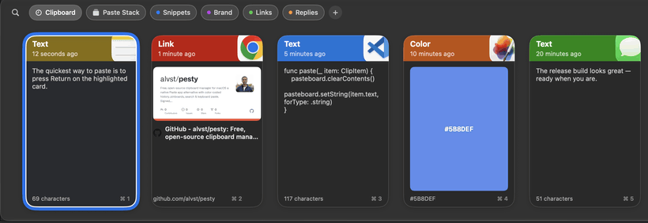

Pesty
An independently maintained Pesty fork.
Local artifact: packaging/Pesty.app
Homebrew and Mac App Store listings may track upstream Pesty rather than this fork.

The Paste experience, free and open source
Pesty keeps a history of everything you copy and brings it back with a keystroke. Press the global shortcut and a color-coded strip slides up from the bottom of your screen. Pick a clip with the arrow keys, press Return, and it pastes into the app you were using. This repository is an independent fork of momenbasel/pesty.
Features
Clipboard history
Text, links, images, files, rich text, and colors - all remembered.
Color-coded cards
Each clip is tinted by the app it came from, with a preview and timestamp.
Pinboards
Save the snippets you reuse into named collections that never expire.
Instant search
Just start typing to filter your whole clipboard history.
Keyboard-first
Arrows to move, Return to paste, ⌘1–9 to quick-paste.
Native Pesty identity
The app, package, executable, and repository retain the Pesty name for compatibility.
How Pesty compares
| Pesty | Paste | Maccy | |
|---|---|---|---|
| Price | Personal source build | Subscription | Free |
| Open source | Yes (MIT) | No | Yes |
| Color-coded strip UI | Yes | Yes | No (list) |
| Pinboards | Yes | Yes | No |
| Native (no Electron) | Yes | Yes | Yes |
Install
git clone https://github.com/alvst/pesty.git cd pesty bash scripts/build_app.sh cp -R packaging/Pesty.app /Applications/
The local build is ad-hoc signed with the separate com.alvst.pesty identity. It requires macOS 14 (Sonoma) or later and runs on Apple Silicon and Intel.
FAQ
Can I install upstream Pesty later?
Yes. Pesty uses a separate bundle identifier, preferences domain, storage folders, temp folders, login item identity, and default shortcuts. The macOS clipboard itself remains intentionally shared.
Why is a fresh Accessibility grant required?
macOS keys Accessibility permission to the signed app identity. The separate Pesty identity prevents it from borrowing or disrupting upstream Pesty's grant.
Does it contact the network?
Clipboard data is not sent to the developer. Optional iCloud sync uses your Apple account, and inline link previews can request metadata from copied URLs. See the privacy page for details.